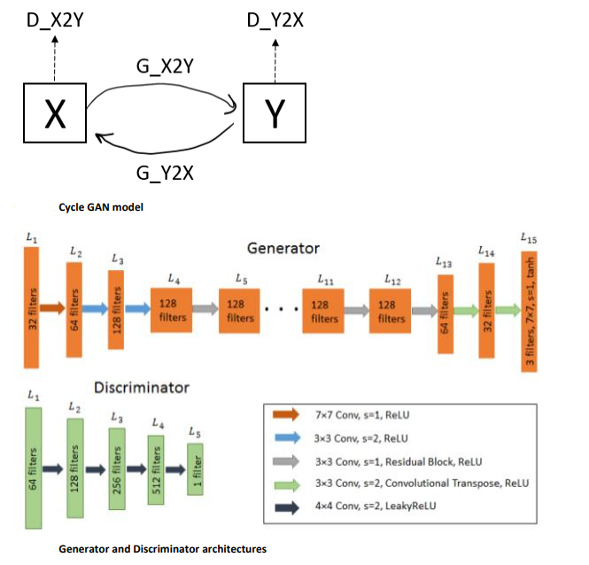

Synthetic Wafer Defect Map Generator Using Cycle GAN
Project Description
A wafer defect map is a graphical representation of a silicon wafer which highlights the locations of defective chips. The motivation/ use case of this project
is to be able to synthetically generate wafer defect maps that are indistinguishible from a 'real' defect map using machine learning in order to supplement
datasets of these 'real' defect maps.
Cycle GAN is a variant of the Generative Adversarial Networks which is a deep learning based generative model where two neural networks compete in a zero
-sum game where the "Generators" which generate images will try to fool "Discriminators" which determine whether an image was created by a Generator or not.
Unlike regular GAN which use ambient noise for image generation, Cycle GAN uses unpaired images for image to image translation from one domain to another and in this
project it is used to translate wafer map defect patterns with no defects (domain X) to wafer maps with a defects (domain Y).
To evaluate the quality of the output, this project employs visual inspection as well as two quantitative measure known as the Kernel Inception Distance (KID) and
the Fretchet Inception Distance.
Skills and Software Used
- Python
- Pytorch
- Tensorflow
Model and Architectures
Results